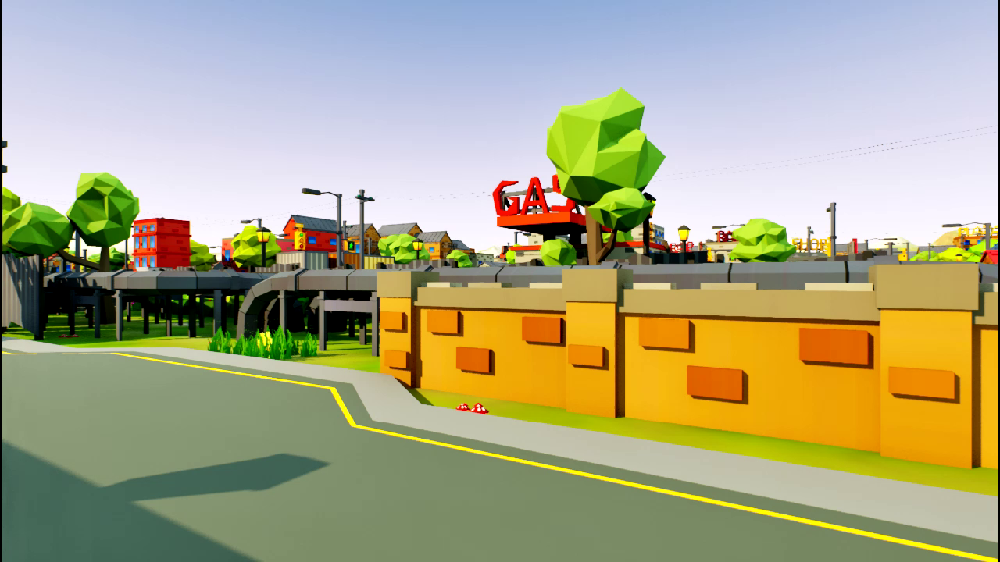
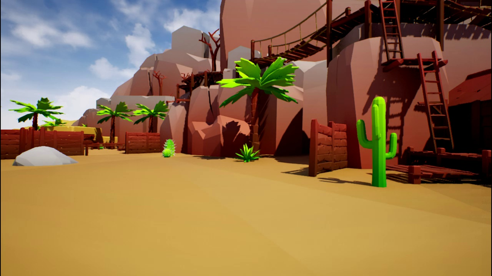
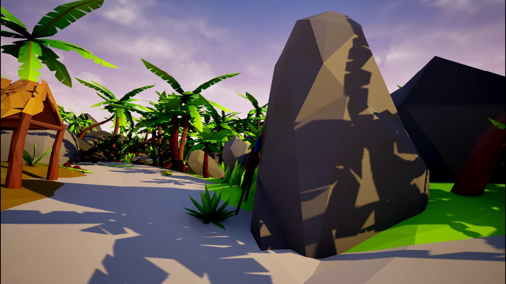
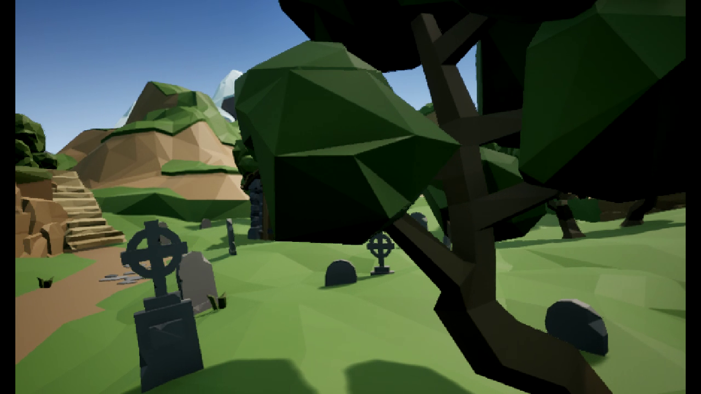
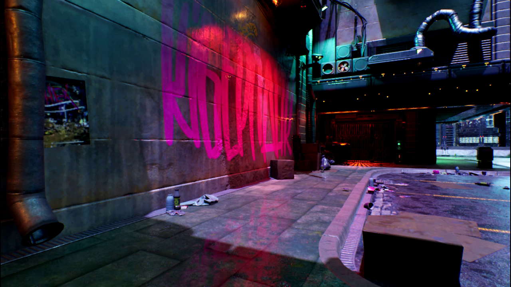

timeline
title Matrix-Game Evolution
May 2025 : v1.0 — Foundation
: 17B parameters
: Minecraft-only
: Offline generation
: First open-source world model
Aug 2025 : v2.0 — Real-Time
: 5B parameters (optimized)
: Multi-game (GTA, TempleRun)
: 25 fps streaming
: Single GPU inference
Mar 2026 : v3.0 — Full Vision
: 28B MoE (2×14B)
: 10+ environments
: 40 fps at 720p
: Long-horizon memory
Matrix-Game 3.0: Real-Time World Model with Long-Horizon Memory
720p · 40fps · 28B MoE · Long-Horizon Memory
Skywork AI Matrix-Game Team
2026-03-27
Matrix-Game 3.0
Real-Time World Simulation with Long-Horizon Memory
720p · 40 fps · 28B MoE · Minute-Long Coherent Generation
“What does it take to simulate a world?”
A world model must see — perceive the environment at high fidelity
A world model must remember — maintain consistency over long horizons
A world model must react — respond to player input in real time
Matrix-Game 3.0 does all three — simultaneously, at 40 fps, for over a minute.
The Journey: v1 → v2 → v3
Breakthrough 1 — Memory
The Memory Problem
Without Memory
- Objects vanish after 50 frames
- Scene style drifts over time
- Camera returns show different environments
- Player actions have no lasting effect
- Generation limited to ~3 seconds
With Long-Horizon Memory
- Objects persist across thousands of frames
- Consistent style and lighting throughout
- Camera-aware spatial consistency
- Actions create lasting world changes
- Coherent generation for 60+ seconds
The core insight: A world model without memory is just a video generator. Memory is what makes it a world.
Memory Architecture
flowchart LR
subgraph INPUT["Input Pipeline"]
A[Current Frame] --> B[Diffusion Transformer]
C[Player Actions] --> B
end
subgraph MEMORY["Long-Horizon Memory"]
D[Frame Re-injection<br/>Past keyframes fed back] --> B
E[Camera-Aware Memory<br/>Pose-indexed spatial cache] --> B
end
subgraph CORRECTION["Self-Correction"]
B --> F[Predicted Frame]
F --> G[Prediction Residuals<br/>Error = Predicted - Actual]
G --> H[Correction Signal]
H --> B
end
F --> I[Output Frame<br/>720p @ 40fps]
style INPUT fill:#3730a3,color:#fff,stroke:#7c79c4
style MEMORY fill:#1a8a8a,color:#fff,stroke:#8fc4c4
style CORRECTION fill:#c69a2d,color:#fff,stroke:#e8d49a
Four-part memory system: Frame re-injection maintains visual anchors. Camera-aware memory indexes scenes by spatial position. Prediction residuals detect drift. Self-correction feeds errors back to prevent accumulation.
Breakthrough 2 — Speed
40 FPS at 720p
40 fps
720p resolution
60% faster framerate · 4x the pixels · Real-time interactive
| Metric | v1 | v2 | v3 |
|---|---|---|---|
| Resolution | 256p | 360p | 720p |
| Framerate | Offline | 25 fps | 40 fps |
| Coherence | ~2s | ~5s | 60s+ |
| Parameters | 17B | 5B | 28B MoE |
| GPU | 4×A100 | 1×A100 | 1×A100 |
DMD Distillation: 50 Steps → 3 Steps
flowchart LR
subgraph TEACHER["Teacher Model — 50 Steps"]
T1[Step 1] --> T2[Step 2] --> T3["..."] --> T4[Step 50]
T4 --> TQ["High Quality<br/>~1.2 fps"]
end
subgraph DISTILL["Distribution Matching<br/>Distillation"]
TQ --> D1[Match output<br/>distributions]
D1 --> D2[Train student to<br/>replicate quality]
end
subgraph STUDENT["Student Model — 3 Steps"]
S1[Step 1] --> S2[Step 2] --> S3[Step 3]
S3 --> SQ["Same Quality<br/>~40 fps"]
end
D2 --> S1
style TEACHER fill:#3730a3,color:#fff,stroke:#7c79c4
style DISTILL fill:#c69a2d,color:#fff,stroke:#e8d49a
style STUDENT fill:#2d9050,color:#fff,stroke:#50c878
17x compression in denoising steps with minimal quality loss. Distribution Matching Distillation (DMD) trains a student model to produce the same output distribution as the teacher in just 3 steps.
LightVAE + Quantization
Inference Optimization Stack
LightVAE Decoder Distillation
Original VAE decoder is the bottleneck at high resolution. We distill a lightweight decoder variant with configurable pruning ratios.
INT8 Quantization
Post-training quantization of the diffusion backbone reduces memory and increases throughput with negligible quality impact.
Speed vs Quality Tradeoffs
| Config | Pruning | FPS | Quality |
|---|---|---|---|
| Full | 0% | 28 | Baseline |
| Light-50 | 50% | 35 | -0.8% |
| Light-75 | 75% | 40 | -1.5% |
| Light-75 + INT8 | 75% | 42 | -2.1% |
Sweet spot: Light-75 achieves 40 fps with just 1.5% quality loss — imperceptible in interactive use.
Breakthrough 3 — Scale
28B MoE: Scaling with Experts
flowchart TB
INPUT[Input Tokens<br/>Frame + Action + Memory] --> ROUTER[Expert Router<br/>Top-2 Gating]
ROUTER --> E1[Expert 1<br/>14B — Outdoor Scenes]
ROUTER --> E2[Expert 2<br/>14B — Indoor Scenes]
ROUTER --> E3[Expert 3<br/>14B — Dynamic Objects]
ROUTER --> E4[Expert 4<br/>14B — Lighting & Weather]
E1 --> MERGE[Weighted Merge]
E2 --> MERGE
E3 --> MERGE
E4 --> MERGE
MERGE --> OUTPUT[Output Tokens]
style ROUTER fill:#c69a2d,color:#fff,stroke:#e8d49a
style E1 fill:#3730a3,color:#fff,stroke:#7c79c4
style E2 fill:#1a8a8a,color:#fff,stroke:#8fc4c4
style E3 fill:#2d9050,color:#fff,stroke:#50c878
style E4 fill:#b83a3a,color:#fff,stroke:#e07070
2x14B Mixture-of-Experts — 28B total parameters, but only 14B active per token. Same inference cost as a 14B dense model with superior quality and generalization.
Upgraded Data Engine
Unreal Engine Synthetic
Procedurally generated environments with perfect camera, depth, and action labels. Unlimited scale.
AAA Game Capture
Real gameplay from diverse titles. Rich dynamics, realistic physics, varied visual styles.
Real-World Video
Driving footage, nature scenes, urban environments. Bridges the sim-to-real gap.
Three-stream data pipeline — 2M+ hours of diverse training data converging into a unified format with standardized action annotations. Synthetic data provides clean labels, game data provides visual diversity, real-world data provides physical grounding.
Visual Showcase
Worlds Matrix-Game Can Dream





5 diverse environments — all generated in real time at 720p, 40 fps, with player keyboard and mouse control. From futuristic cities to forest trails, from sci-fi corridors to urban streets.
Interactive Control

Player-Driven World Generation
- WASD — Movement through the environment
- Mouse — Camera look direction (yaw + pitch)
- Actions injected at each denoising step
- Camera pose feeds into spatial memory
Real interactivity: The model doesn’t just play back video — it generates new frames conditioned on your exact inputs, every 25ms.
The Evolution: v1 → v2 → v3
v1.0 — Foundation
May 2025
- 17B dense parameters
- Minecraft-only
- Offline generation
- First open-source world model
Proved that open-source interactive world models are possible.
v2.0 — Real-Time
Aug 2025
- 5B optimized
- GTA, TempleRun, universal scenes
- 25 fps streaming
- Single GPU (A100)
Achieved real-time generation across multiple domains.
v3.0 — Full Vision
Mar 2026
- 28B MoE (2x14B)
- 10+ diverse environments
- 40 fps at 720p
- 60s+ coherent generation
Delivered the complete world simulation system.
Open Source: Apache 2.0
Everything is open. Model weights, training code, data pipeline, and evaluation benchmarks — all released under Apache 2.0.
What We Release
- 28B MoE model weights (HuggingFace)
- Full training and inference code
- Data pipeline and annotation tools
- LightVAE distilled decoder variants
- DMD student model checkpoints
- Evaluation benchmark suite
Build With Us
- HuggingFace: skywork-ai/matrix-game-3
- GitHub: github.com/skywork-ai/matrix-game
- License: Apache 2.0
“The future of world simulation should be built in the open.”
— Skywork AI Matrix-Game Team